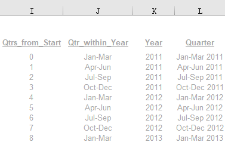

3 Auto-Add Table Line
Task: to create a new line in an Excel table when new data is added, in this instance quarters.
Steps
- Reference columns within the table need to be calculated from a formula.
- Create a VBA script:
- Check if there are more quarters of data in the data tab
- If yes, insert a new row.
Details
In this worked example we are using [TableA1b_Automated], with sheets Table1 and DataNov. Each quarter new data is added to the data tab and a new row will need to be added to the table to represent this.
- First, set up a dynamic count for the number of entries (i.e. number of quarters) in the data. In this example, we’ve set up a count in cell
H4with the formulaCOUNTA(DataNov!D1:IV1)- this will count the number of non-blank cells in this range across columns within the sheet.

- We then have to set two columns in our table to be formulas.
- Column A - this is simple, we just have to increase the number by 1 for each new row.
- Column B - in this column, the quater and year are named. So for this we will need to create a four column reference table (here, we right-clicked on
Iand clicked insert 4 times). The table we created looks like this with the formulas listed below.

Col I (Qtrs_from_Start) - this follows the same format as for Column A, except that we start the count at 0.
Col J (Qtr-within_Year) - =VLOOKUP(MOD(<Qtrs_from_Start>, 4), T$12:V$15, 2). This requires its own reference table for T$12:V$15 which looks like this:

Col K (Year) - = <Start Year> + QUOTIENT(<Qtrs_from_Start>, 4). As an example, the first formula for K11 will be =2011 + QUOTIENT(I11, 4).
Col L (Quarter) - =CONCATENATE(<Qtr_within_Year, " ", <Year>). As an example, the first formula for L11 will be =CONCATENATE(J11, " ", K11).
Finally, we can change our column B to be a formula. For this, we need to include a p (provisional) at the end of the final row in the table. The formula will look like this: =<Year> & IF(<Quarters_of_Data+1), "p", ""). The worked example is shown below:
- The next step is to make quite a simple VBA script that checks if there are more quarters in our data tab that are in the table. If this is true then it copies the new data and inserts as the last row in our table. First, ensure Macros are enabled on your workbook (you may need to close and re-open the document), then click on the View tab and then select Macros. On the page that appears, enter the name of the Macro and click “Create”. Then, copy the code below. Once the Macro is set up, you can set up options to create a shortcut key to run the code without having to find it in the Macro menus.
Sub CopyDataInsertLastLineOfTable()
'
' CopyDataInsertLastLineOfTable Macro
'
' Keyboard Shortcut: Ctrl+u
'
' If the number of quarters of data in the data tab is greater than the number of rows in the table,
' then run the following code.
If Worksheets("Table1").Range("H4").Value > Worksheets("Table1").Range("H5").Value Then
' Find the last row in the table.
' The cell "H5" counts the current number of rows in the table while the +10 adjusts for
' the position of the first row.
last_row_in_table = Worksheets("Table1").Range("H5").Value + 10
' Copy the last row in the table.
Worksheets("Table1").Rows(last_row_in_table).Copy
' Select the row after the last row in the table.
Rows((last_row_in_table + 1)).Select
' Insert the copied row right after the last row in the table.
Select.Insert Shift:=x1Down, CopyOrigin:=xlFormatFromLeftOrAbove
End If
End Sub